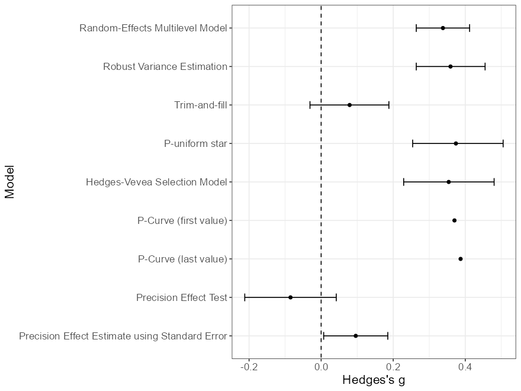
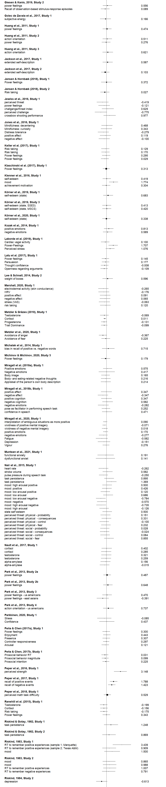
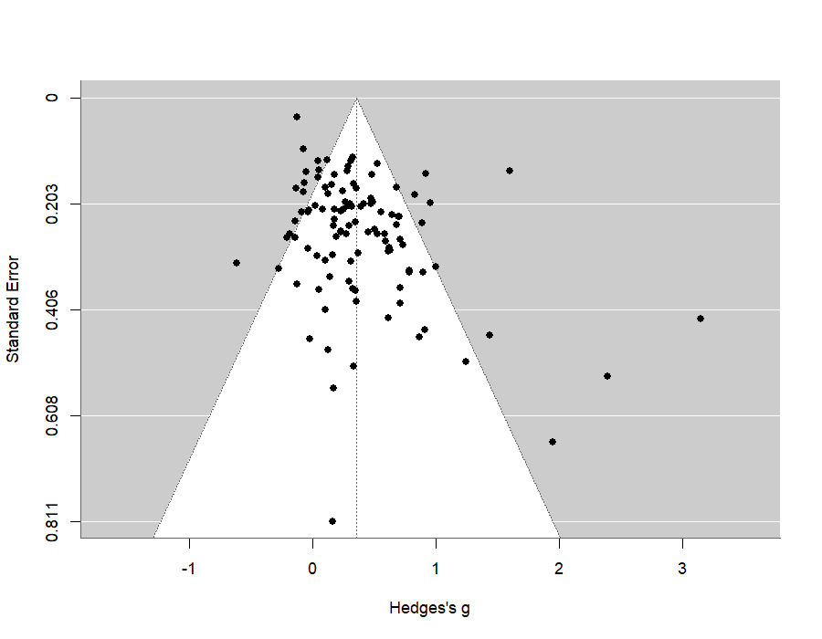
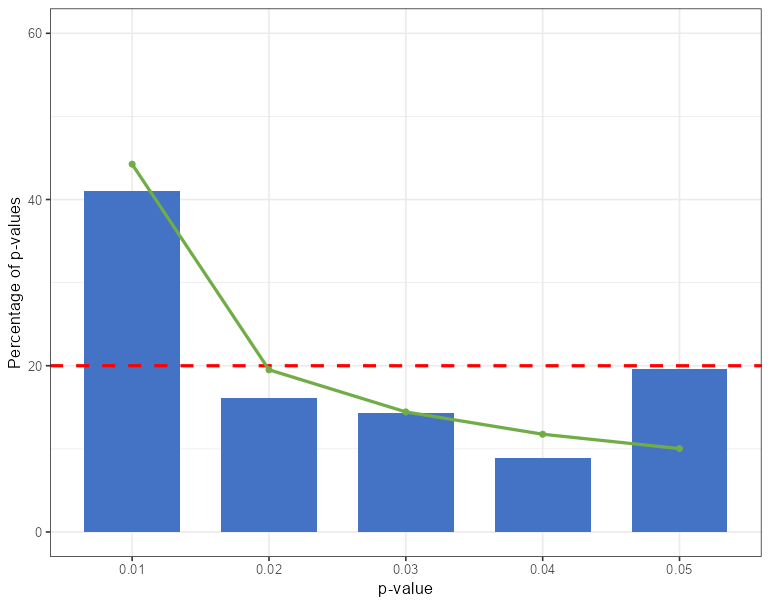
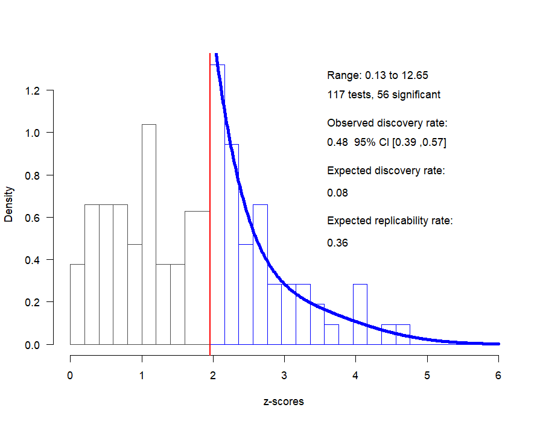
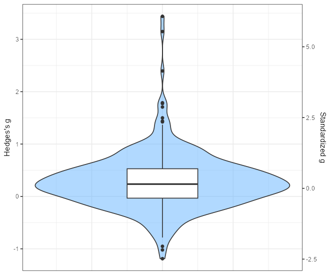

About
Migrated from the former Shiny app at metaanalyses.shinyapps.io/bodypositions/ → now hosted at lukasroeseler.github.io/shiny/bodypositions/.
This app runs a dynamic meta-analysis of experimentally induced body position (posture/pose) effects on behavioral, self-report, and physiological dependent variables. All analyses below are computed with R using the same methods as the original app (multilevel random-effects meta-analysis, trim-and-fill, p-uniform, Hedges–Vevea selection model, PET–PEESE, p-curve, z-curve, Egger's test).
Citation: Röseler, L., Körner, R., & Schütz, A. (2021). Dynamic Meta-Analysis. https://osf.io/ns65r/
Data and Materials: https://osf.io/vz4a6/ · Add study: Submission portal
Sample Overview
| Articles | Studies | Effects | Sample size |
|---|
Number of research reports (articles), independent studies, effects, and total sample size for the selected set of studies (all DV types, all preregistration statuses, all years).
Effect Size Estimates
Estimates of Hedges' g from nine estimation models. LCL = Lower Confidence Limit, UCL = Upper Confidence Limit, k = number of effects. First reported values are selected for analyses.

| Model | g | LCL | UCL | k |
|---|
Live meta-analysis (computed in your browser with R)
This interactive section runs a DerSimonian–Laird random-effects meta-analysis live in R (WebR) on the selected subset. The static plots above use the full (default) set of studies.
Forest Plot of All Included Studies
Scroll to see all studies. Error bars are 95% confidence intervals; the red line is g = 0.

Publication Bias and Questionable Research Practices
First reported values are selected for analyses.
Funnel Plot of Effects

Egger's Test of Funnel Plot Asymmetry
| Intercept | Tau² | t | p |
|---|
P-Curve of Effects

P-curve can only be plotted if there are 2 or more significant effects.
Z-Curve of Effects (EM via EM, no bootstrapping)

Distribution of Effect Sizes

Heterogeneity (REML)
| Sigma² Level 1 | Sigma² Level 2 | Tau² | Q | Q (p) |
|---|
More tools for outlier diagnostics may be added later.
About
Version: v0.72 · Last update: 07 July 2022
Citation: Röseler, L., Körner, R., & Schütz, A. (2021). Dynamic Meta-Analysis. Retrieved from https://osf.io/ns65r/
Data and Materials: https://osf.io/vz4a6/
Add Study: Submit new or missing studies here: https://www.soscisurvey.de/submissions_bodypositions
Contact: lukas.roeseler@uni-bamberg.de
Methods
Analyses use a multilevel random-effects model (restricted maximum likelihood / maximum likelihood with Knapp–Hartung adjustment) accounting for the nesting of multiple dependent variables within studies (random = ~1 | id2/id1). Publication-bias analyses include trim-and-fill, the p-uniform* method, the Hedges–Vevea selection model, PET–PEESE, p-curve, and z-curve. R packages used: metafor, meta, robumeta, puniform, weightr, zcurve, dmetar (pcurve).